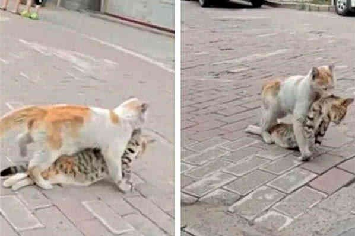

小区内流浪猫叼着猫皮，路人嫌弃，知道原由所有人哭了 ...
在一个安宁的小区里，人们生活着各自的平凡日子。然而，一天清晨，一只叼着一块猫皮的流浪猫闯入了他们的视线。
当流浪猫出现时，路人们都感到不安，他们纷纷避开这只可怜的动物，甚至有人投以嫌弃的目光。小区的保安大叔，名叫老王，却没有像其他人那样避开。相反，他走到了流浪猫身边，蹲下来仔细观察。
“老王，你在干什么？那是只流浪猫，快点走开吧。”一位居民担忧地提醒着。
但老王没有理会，他轻轻地抚摸着流浪猫的头，然后仔细地检查着那块猫皮。接着，他站起身来，眼含泪水地对着围观的人们说道：“这块猫皮上写着‘小花’，而这只流浪猫，是我们小区里一位老奶奶的宠物猫。”
听到这个消息，围观的人们都感到震惊，他们没想到这只看似普通的流浪猫竟然有着如此感人的背后故事。
老王继续说道：“老奶奶已经去世了，她把‘小花’交给了她的侄女照顾，但侄女却不善待它。‘小花’在她家里受尽了折磨，最终逃了出来。它来到我们小区，却因为猫皮的缘故被误解。”
听到这个令人心碎的故事，路人们纷纷悔恨自己的冷漠。他们开始围绕着流浪猫，给予它温暖和关爱。有人给它食物喂养，有人为它建立了简易的庇护所，还有人准备好带它去兽医做全面检查。
这只流浪猫的命运因为老王的一番话而得到改变，而人们也因为这个故事而懂得了更多关于爱与责任的意义。从此以后，他们对待身边的每个生命都更加温柔，因为他们明白，每个生命背后都可能隐藏着一段动人的故事，而爱和关怀，是我们共同的责任。